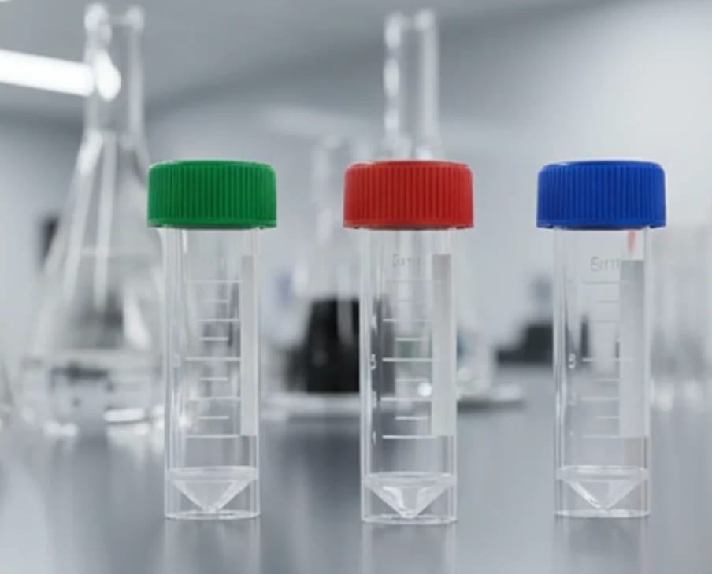
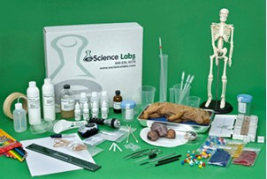

Healthcare
Clinical and hospital support
Supplies that help procurement teams keep wards, clinics, and diagnostic units ready for daily demand with dependable quality and clear product groupings.
Aco Liff Medical Supplies Ltd supports hospitals, clinical laboratories, universities, industrial teams, environmental programs, and quality control operations with dependable products, organized sourcing, and responsive service.
Delivering certified consumables, precision instruments, and procurement clarity across healthcare, research, industrial, and environmental sectors.
Premium product imagery and reliable service details that help buyers evaluate critical supplies at a glance.
The site structure and content reflect how institutions actually buy: by category, by compliance needs, by use case, and by urgency. That makes the brand easier to trust and the navigation easier to use.
Supplies that help procurement teams keep wards, clinics, and diagnostic units ready for daily demand with dependable quality and clear product groupings.
Technical consumables and instruments that support methodical workflows, repeatable results, and the pace of research in academic and private settings.
Solutions for chemical analysis, process monitoring, and quality control where consistency, traceability, and documentation matter.
Reliable products for water, soil, and air analysis programs, designed to support field-to-lab continuity and evidence-based reporting.
Flexible support for teaching laboratories, demonstration suites, and research training environments across colleges and universities.
Practical safety equipment, PPE, and disposal solutions that help institutions maintain clean, compliant, and protected spaces.
Each block is designed to feel like a serious procurement catalogue section, with enough detail for informed browsing while remaining visually calm and easy to scan.

Glassware, sterile disposables, racks, tubes, pipette tips, and high-utility consumables selected for dependable daily use.

Performance-focused instruments that support accurate testing, consistent readings, and a professional laboratory environment.

Support for teams advancing science through experimentation, method refinement, and reliable laboratory infrastructure.

Mobility and patient-support equipment that helps care facilities maintain comfort, movement, and operational readiness.
Quality-control products for teams working in food processing, safety monitoring, and environmental analysis.

Protective products and waste-disposal supplies that help institutions maintain safer spaces and clear operating standards.
The goal is to make it immediately clear that Aco Liff serves hospitals, laboratories, research teams, and industrial buyers with dependable products, clear specifications, and professional support.
Every section speaks to buyers, lab managers, and administrators who need a clear path from product discovery to quotation.
Pages are grouped around consumables, equipment, safety, and service areas so visitors can find what they need without friction.
Blue, white, and black create the right mix of clinical clarity and corporate authority without visual noise.
Navigation, cards, section labels, CTAs, and footer patterns repeat across the site so future pages stay visually consistent.

This layout gives the company a strong institution-grade feel: organized product families, visible service logic, and a calm tone that works for hospitals, laboratories, and procurement teams alike.